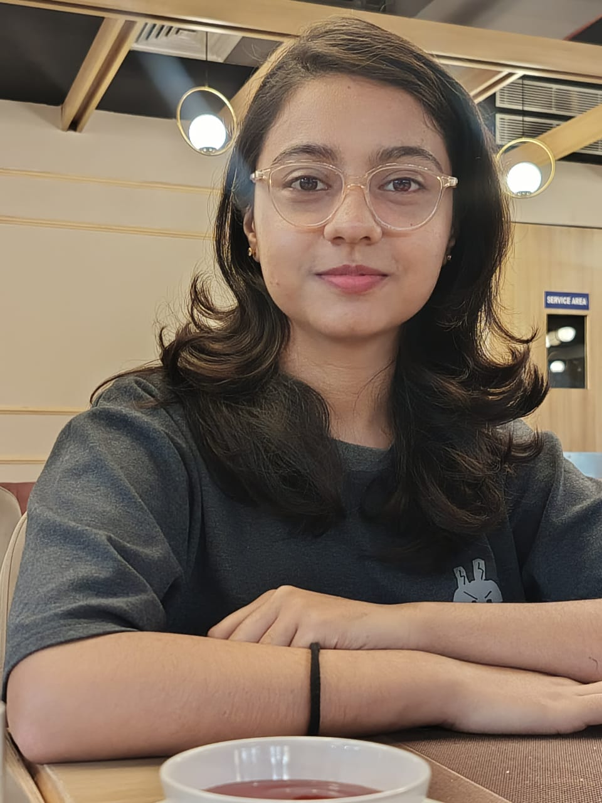

My name is Vanshika Goswami. I am from Sonipat. I am studying at Gurugram University,Gurugram and pursuing B.Tech in Computer Science. My areas of interest include AI, ML and Data Science.
My name is Vanshika Goswami, and I am from Sonipat. I am currently pursuing a B.Tech in Computer Science at Gurugram University, Gurugram. My passion lies in the fields of Artificial Intelligence, Machine Learning, and Data Science. I enjoy exploring new technologies and developing innovative solutions to real-world problems. During my academic journey, I have worked on several projects, including a Deepfake Detection System, which enhanced my understanding of AI and cybersecurity. Additionally, I have gained experience in web development, learning essential technologies such as HTML, CSS, and JavaScript. I have also completed an internship at Edunet Foundation, where I worked on a project called Teenmate. I am eager to continue learning and growing in the world of AI and Data Science, aiming to contribute to cutting-edge research and technological advancements.